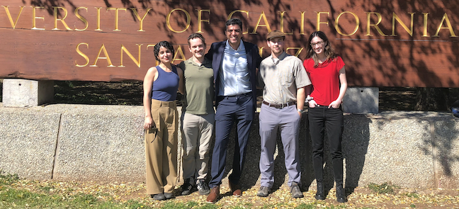
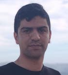

Research group
Group photos
March 2024
|  |
Current Postdoctoral scholars
Current PhD students
 |
PhD in Aerospace Engineering, Iowa State University MS in Mechanical and Aerospace Engineering, Oklahoma State University |


|
PhD in Applied Mathematics, UC Santa Cruz BS in Computer Engineering, Embry-Riddle Aeronautical University |
 Dean's Fellowship (2022-23)
Dean's Fellowship (2022-23)Current MS students
|
MS in Aerospace Engineering, Iowa State University BS in Electrical and Electronics Engineering, Birla Institute of Technology and Science Pilani |
Current Undergraduate students
Former Postdoctoral scholars
|
PhD in Mechanical Engineering, Arizona State University MS in Mechanical Engineering, Arizona State University B.Tech. in Mechanical Engineering, Indian Institute of Technology Kharagpur |
|
PhD in Mechanical Engineering, University of Texas at Dallas BS in Automation, Beijing Technology and Business University |
Former PhD students
|
PhD Dissertation: Contractions and Reactions in Schrödinger Bridges PhD in Applied Mathematics, UC Santa Cruz BS in Applied Mathematics, UC Los Angeles |
|  |
PhD Dissertation: Measure-valued Proximal Recursions for Learning and Control PhD in Electrical and Computer Engineering, UC Santa Cruz MS in Electrical Engineering (Control), Imam Khomeini International University, Iran |
|
PhD Dissertation: A Geometric Approach for Learning Reach Sets PhD in Applied Mathematics, UC Santa Cruz MS in Mechanical Engineering, University of Tehran, Iran |
|
PhD Dissertation: Generalized Gradient Flows for Density Prediction, Control and Learning PhD in Applied Mathematics, UC Santa Cruz BS in Mathematics, UC Riverside |
Former MS students
MS Thesis: Neural Schrödinger Bridge with Sinkhorn Losses MS in Electrical and Computer Engineering, UC Santa Cruz Dual degree in Computer Science and Electrical Engineering, University of Michigan |
MS Thesis: Graph Curvature for COVID-19 Network Risk Analytics MS in Scientific Computing and Applied Mathematics, UC Santa Cruz BA in Mathematics, UC Santa Cruz |
|
MS Thesis: Ellipsoidal Algorithm for Fast Computation of Reachable Tubes MS in Scientific Computing and Applied Mathematics, UC Santa Cruz BS in Physics, Computer Science, UC Santa Cruz |
Former Undergraduate students
Dylan Brehm
BS in Aerospace Engineering, Iowa State University |
Adam Korycki BS in Computer Engineering, UC Santa Cruz |
Karthik Sivaramakrishnan Senior Thesis: Ollivier-Ricci Curvature for Directed Weighted Graphs BA in Mathematics, Minor in Computer Science, UC Santa Cruz |
Former High School students
Pranav Eranki Cupertino High School, Cupertino, CA |